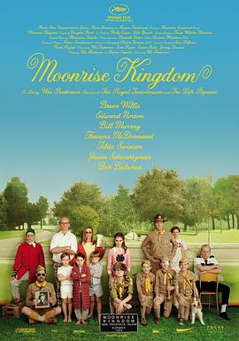

月升王国 / Moonrise Kingdom
又名：小学鸡私奔记(港) / 月升冒险王国(台) / 月亮王国 / 月亮升起的王国
作品信息
| 导演 | 韦斯·安德森 |
| 编剧 | 韦斯·安德森 / 罗曼·科波拉 |
| 主演 | 杰瑞德·吉尔曼 / 卡拉·海沃德 / 布鲁斯·威利斯 / 爱德华·诺顿 / 弗兰西斯·麦克多蒙德 / 蒂尔达·斯文顿 / 比尔·默瑞 / 詹森·舒瓦兹曼 / 哈威·凯特尔 |
| 类型 | 剧情 / 儿童 |
| 制片国家/地区 | 美国 |
| 语言 | 英语 |
| 上映日期 | 2012-05-16(戛纳电影节) / 2012-06-29(美国) |
| 片长 | 94分钟 |
| IMDb | tt1748122 |
说过什么
2022-05-01 11:11:01
广播 · 想看
最后一次看到是 2026-10-07T23:15:56+08:00 · 豆瓣原页